01 / COMBAT
Combat
Боевые инструменты и автоматизация отдельных PvP-действий.

BROKECLIENTСмотреть GUI ↗Broke Client — модульный utility-клиент для Minecraft, который объединяет инструменты для боя, передвижения, визуализации и повседневных игровых действий в одном удобном интерфейсе.
Модули сгруппированы по назначению, чтобы нужные функции всегда были под рукой. Состав и поведение функций могут меняться в процессе разработки.
Боевые инструменты и автоматизация отдельных PvP-действий.
Настройки движения и инструменты для более гибкого перемещения.
Визуальные улучшения и дополнительные способы отображения мира.
Повседневные действия с инвентарём, предметами и игровым персонажем.
Вспомогательные функции и настройки для разных игровых сценариев.
Пять знакомых категорий, поиск модулей и спокойная тёмно-зелёная палитра.
Изучить интерфейс ↗Визуальный стиль повторяет твой игровой GUI: прозрачные панели, тонкие зелёные полосы прокрутки и аккуратная типографика. Ниже — интерактивная стилизация интерфейса.
Нажми на модуль, чтобы изменить его состояние в демонстрации. Это визуальный пример, а не настройки игры.
Broke Client — независимый сторонний utility-клиент для Minecraft Java Edition 1.21.1 на Fabric. Проект объединяет разнообразные игровые модули с удобным Click GUI.
Мы делаем акцент на организации функций, понятной навигации и визуальном стиле. Использование отдельных модулей может противоречить правилам серверов — учитывай правила площадки, на которой играешь.
Следи за развитием Broke Client и обновлениями проекта.
GitHub разработчика ↗